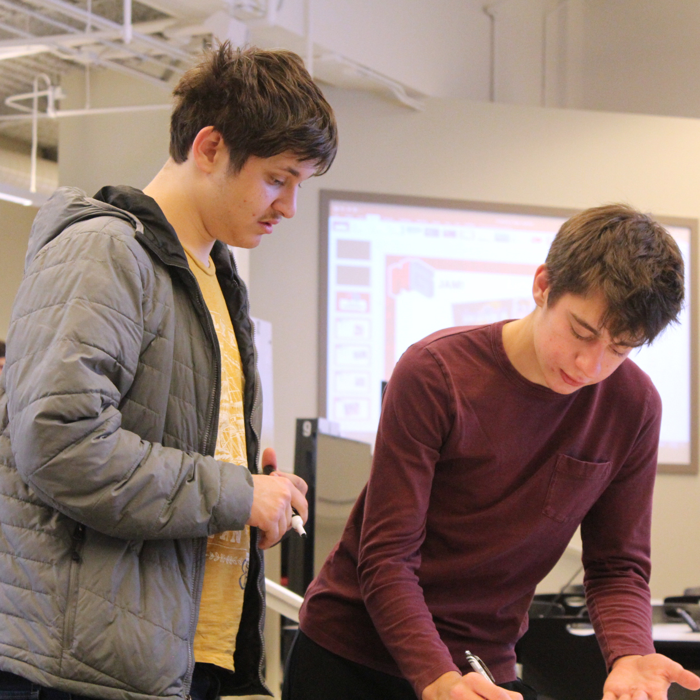
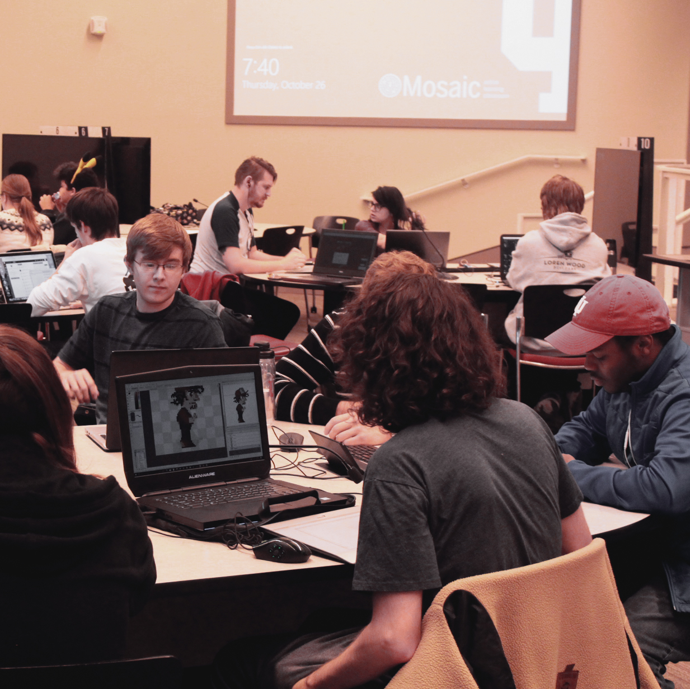
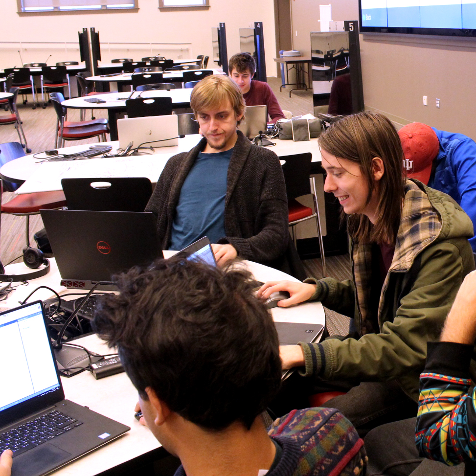

The General Forum offers a no-commitment environment where members can
practice their personal personal skills.
The Forum is simply an open space where people can work on personal projects, bounce ideas off
others, showcase their creations, or learn from member-led workshops, all without the stress of deadlines or other
commitments. For everyone from the beginner developer to the seasoned veteran, our goal is to make The Forum a weekly event to look forward to.

Specialist Teams are
the perfect way for those interested in a particular area to hone their skills and build a portfolio.
These teams work for just four weeks on a specific project that targets a certain development role,
from programming to art and everything in between. While the workload may be heavier than what you would
find in the General Forum, the goal of these teams is to produce showcase-ready work that highlights
your specific skills as a game developer.

Production Teams give members who are serious about working in the industry the opportunity
to use their skills in a collaborative environment. These teams are comprised of members in various roles
who set out to design, prototype, and eventually release a full game. These teams are not
for beginners, as regular deadlines and progress reports are expected. In addition to this,
developing a full blown game is not an easy task, so Production Teams might choose to continue
their work over the course of multiple semesters. While the commitment is much more intense than
the General Forum or Specialist Teams, completing a game with a Production Team is hands down the
best way to show a commitment to working in the industry.